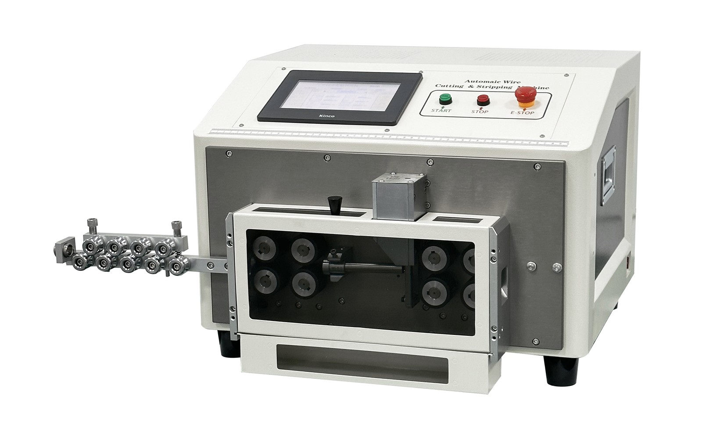
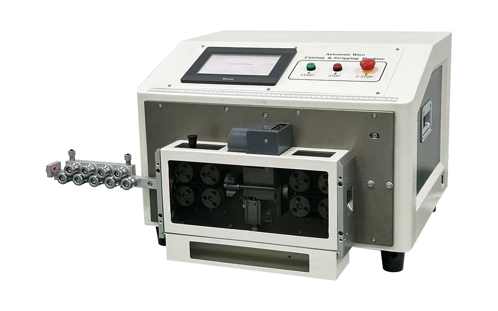

FY-880A
Wide wire range up to 35mm² for larger wire stripping jobs.
Heavy-duty wire stripping platforms for large wires, jacketed cables, and multi-core cable processing.
| FY-880A | 1.0-35mm², cable diameter 1-16mm, approx. 58kg. Best for larger single wires and heavy wire stripping. |
|---|---|
| FY-880B | Cable diameter 4-16mm, approx. 60kg. Best for heavier jacketed wire and round cable applications. |
| FY-880C | Cable diameter 2-10mm, 2-8 cores, approx. 53kg. Supports outer jacket stripping and inner core stripping. |
| FY-880D | 0.1-10mm², cable diameter 1-10mm, approx. 53kg. Best for smaller-range heavy-series wire processing. |
| Cutting Length Range | 0.01mm ~ 99999.99mm |
|---|---|
| Stripping Length | Front strip up to 150mm, rear strip up to 70mm on 880A / 880B / 880D |
| 880C Multi-Core Stripping | Outer jacket front strip up to 200mm, rear strip up to 70mm; inner core strip up to 20mm |
| Processing Speed | Approx. 1200-2000 pcs per hour on 880A / 880B / 880D; approx. 600-1000 pcs per hour on 880C |
| Power Supply | AC220V 50/60Hz, 1.8kW total power, 0.8kW rated power |
| Air Pressure | 0.5-0.8MPa |
| Display / Programs | 7-inch color display, program storage 00-99 |
| Dimensions | 570mm x 550mm x 410mm |
Wide wire range up to 35mm² for larger wire stripping jobs.

Designed for 4-16mm cable diameter and heavier round cable applications.

For 2-8 core cables with outer jacket and inner core stripping.
Heavy feed structure supports stable handling of larger cables.
7-inch display for easier setup and production parameter review.
Works with 0.5-0.8MPa air pressure for heavier stripping actions.
880C supports outer jacket stripping plus inner core stripping.
Choose the FY-880 series for heavy wire, jacketed cable, multi-core cable, or applications that exceed the capacity of compact 808 / 806 machines.
Send your cable diameter, cross-section, number of cores, stripping length, and daily production quantity. We will recommend the correct 880 configuration.
Need help choosing the right machine? Free consultation on WhatsApp →